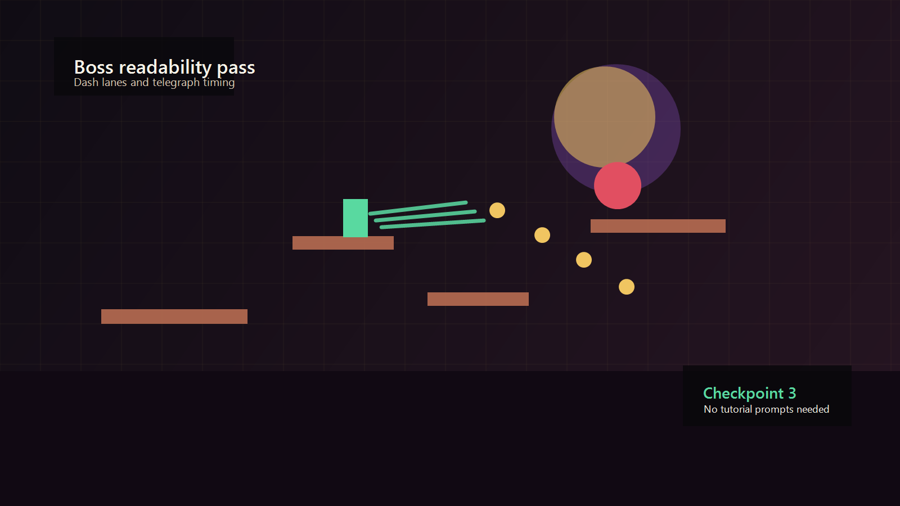
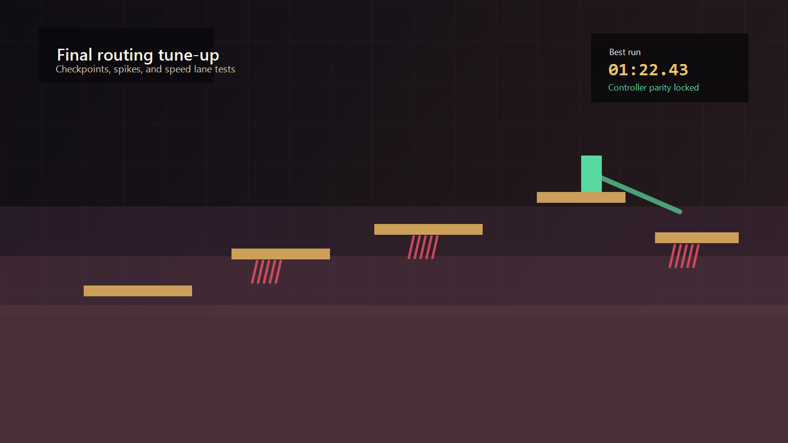

Sample supporting case study
Ritual Runner
This is sample supporting-project content designed to show how a shorter case study can still communicate ownership, challenge, and outcome clearly on the final portfolio.
Placeholder content: replace this section with a real school, jam, or side project when ready.



What I owned
- Implemented the player controller, including acceleration, jump leniency, dash timing, and attack cancel rules.
- Built buffered input and coyote time so the game still felt responsive under stress.
- Hooked combat and movement states into hit feedback, checkpoint flow, and controller support.
- Adjusted enemy timing and arena spacing based on short playtest loops.
- Handled final polish passes for keyboard and controller parity.
Challenge
The prototype already had speed, but it felt unreliable. Inputs could be missed when players jumped at ledge edges, combat timing drifted between encounters, and the project risked reading as a jam build rather than a portfolio piece.
How I solved it
I focused on consistency before adding more content. Buffered input, coyote time, and clearer attack windows made the controls easier to trust. From there I tuned checkpoints and telegraphs so players could recover from mistakes without the pace collapsing.
Outcome
The polished slice kept the urgency of the original jam idea while feeling stable enough to show. The most useful lesson was how much perceived quality can come from timing, feedback, and failure recovery in a very small project.
Gallery